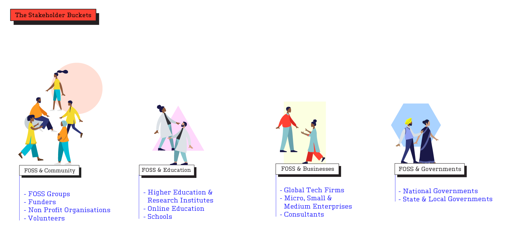
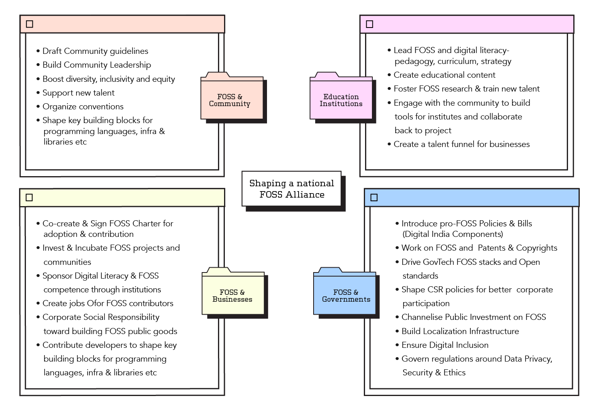
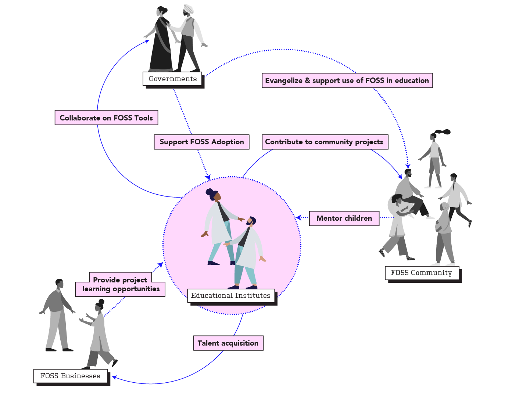
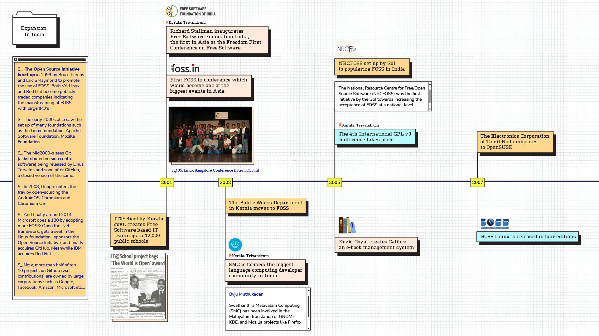

The State of FOSS in India Report
A chronicle of the evolution of the Free and Open Source Software (FOSS) ecosystem in India. Identifying key stakeholders, their challenges & recommendations to support the growth of a healthy community.

Background
CivicDataLab in partnership with Omidyar Network India conducted a research study to develop a deeper understanding of the Free & Open Source Software (FOSS) ecosystem of India, its current stakeholders, challenges faced by the FOSS movement, and explore ways to support FOSS communities and accelerate adoption in India. The research also chronicles the journey of FOSS in India, research and map out the pioneers of the FOSS movement: tracing projects, local communities, big tech contributors and current adoption by State and Central Governments.

The research identifies the key stakeholders of the ecosystem, their spheres on influence, key challenges faced by the them and recommendations on how best to support and incentivise adoption and contribution to the FOSS community, locally and globally. For the Indian FOSS ecosystem to thrive, a National FOSS Alliance is suggested — a network of committed stakeholders from developer communities, industry, academia, and government to join forces and work towards building India’s digital ecosystems rooted in the core values of FOSS.

Team
- Arpit Arora, Co-author
- Divya Rani, Co-author, Designer
- Gaurav Godhwani, Co-author, Project Lead
- Preethi Govindarajan, Co-author
Contributions
FOSS and Education
The education ecosystem for FOSS and it’s sphere of influence.

Chronicle
Snapshot of the evolution of FOSS in India.

Recognition
- India positioned to be a hub for free and open-source software: Report; Economic Times, Jan 14, 2021
- Why India needs to fuss over FOSS; CXOtoday.com, Jan 24, 2021
- Posted on:
- February 1, 2021
- Length:
- 2 minute read, 233 words
- Categories:
- foss open-source report
- Tags:
- foss open-source